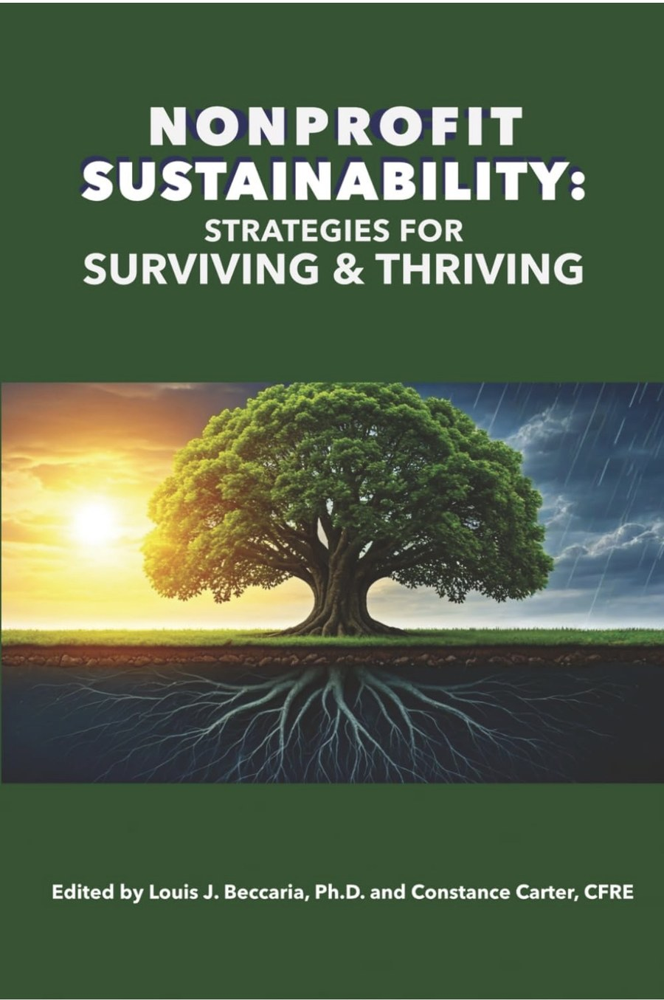
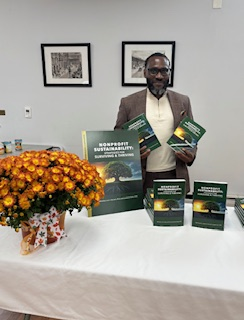
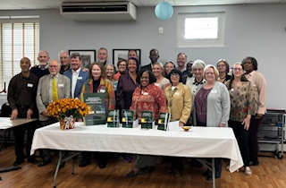

Writing
Public trust is built in relationship
A published chapter on how nonprofits earn community trust, the framework at its center, and newer writing on Substack.



Book chapter by Ajené Livingston, 2026
Cultivating, Nurturing and Sustaining a Positive Community Rapport
One chapter in Nonprofit Sustainability: Strategies for Surviving & Thriving, edited by Louis J. Beccaria, Ph.D. and Constance Carter, CFRE. The book is a collection of practical essays by 31 experienced nonprofit leaders on finance, governance, engagement, and fund development.
Public trust is the currency of the nonprofit sector.
My chapter opens with the story of how I found my voice at Coatesville Cultural Society. From there it makes the case that a nonprofit's reputation is built through relationships: listening to the community, sharing decisions, practicing transparency, and treating funders and residents as partners. It closes with the RAPPORT framework.
- ISBN
- 979-8-9528518-7-0
- Publisher
- BookPlus Publishing
- Formats
- Paperback and Kindle
Signature framework
RAPPORT: a way of being for nonprofits
Seven commitments for building community trust that lasts. Select a letter to read each one.
Respect for dignity
Honor the humanity in every interaction.
Authentic engagement
Build relationships that are real, not transactional.
Purpose alignment
Ensure your work is meaningful and necessary.
Participatory ownership
Invite people into the work, not just around it.
Organizational integrity
Lead with transparency and accountability.
Resource stewardship
Treat every contribution with intention and care.
Transformational impact
Work toward eliminating the need for your existence.
On Substack
Notes from the work
Newer essays and reflections live on Substack. Subscribe there to get new pieces by email.